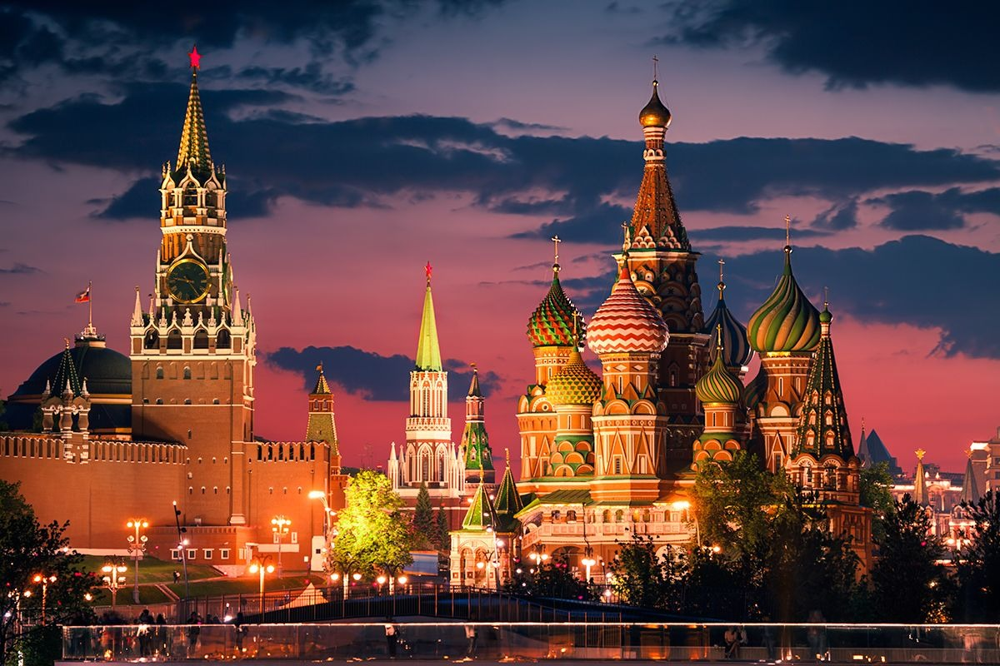
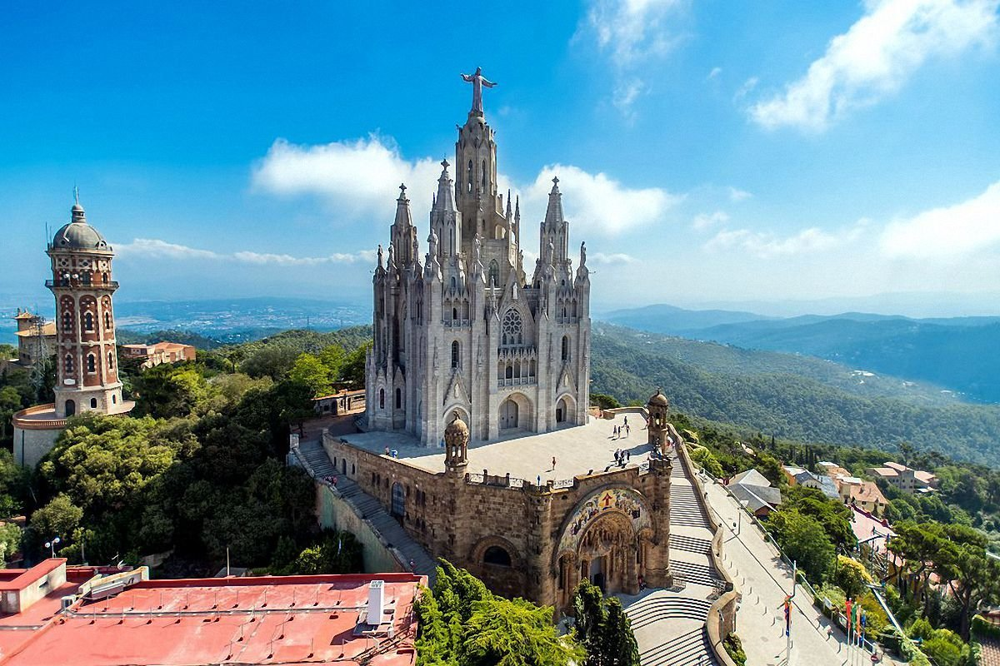
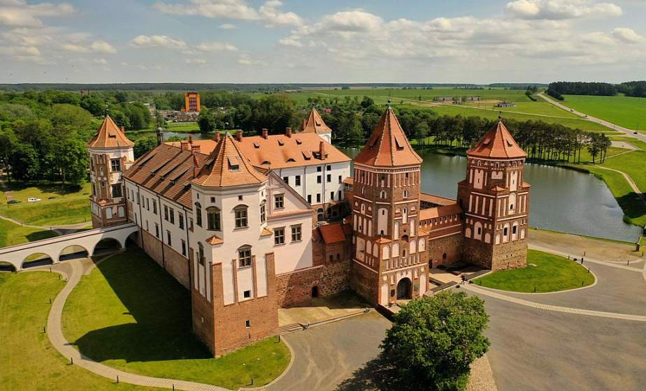
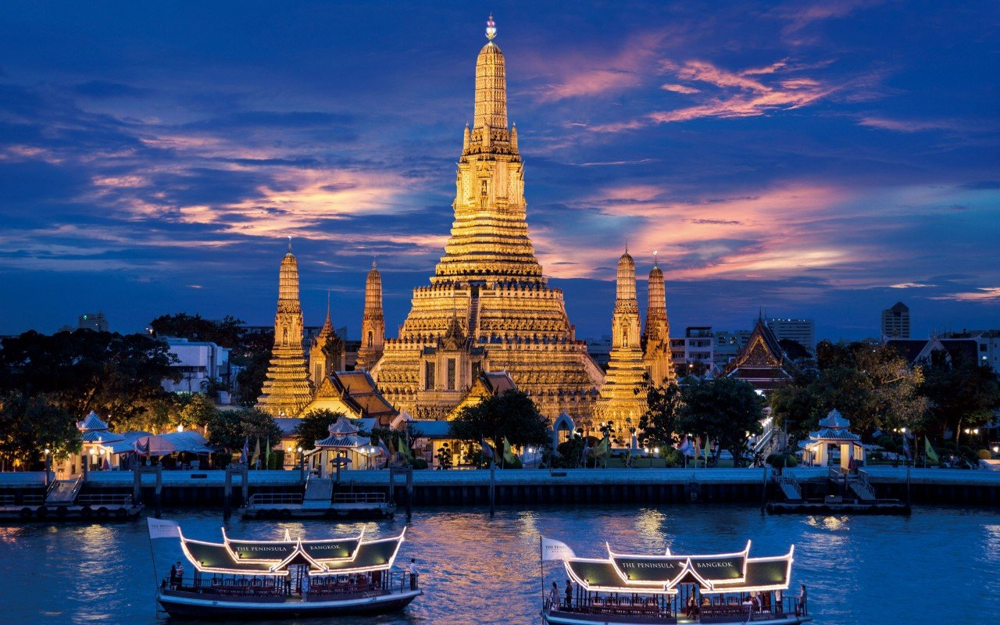
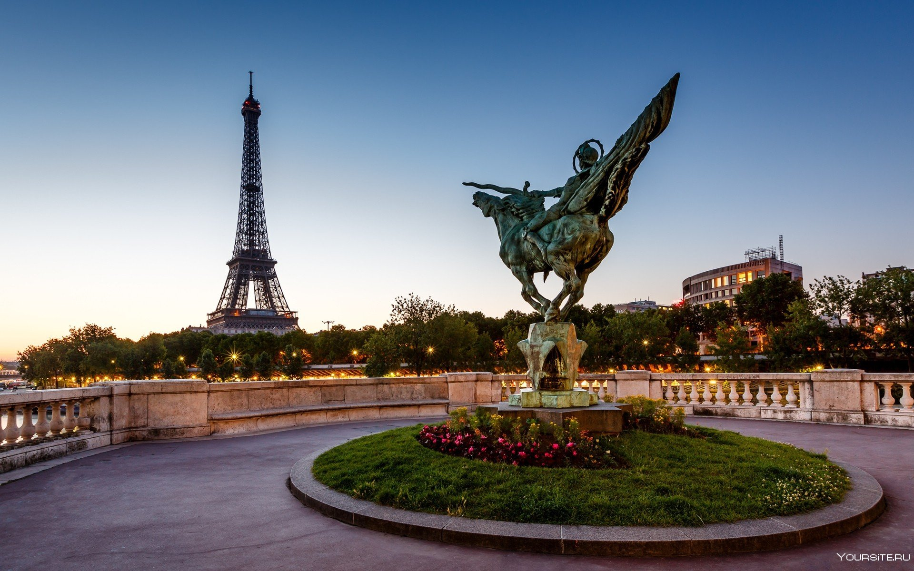
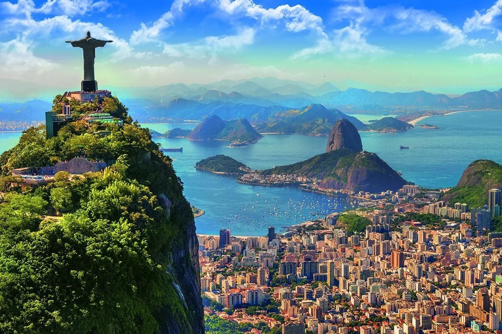
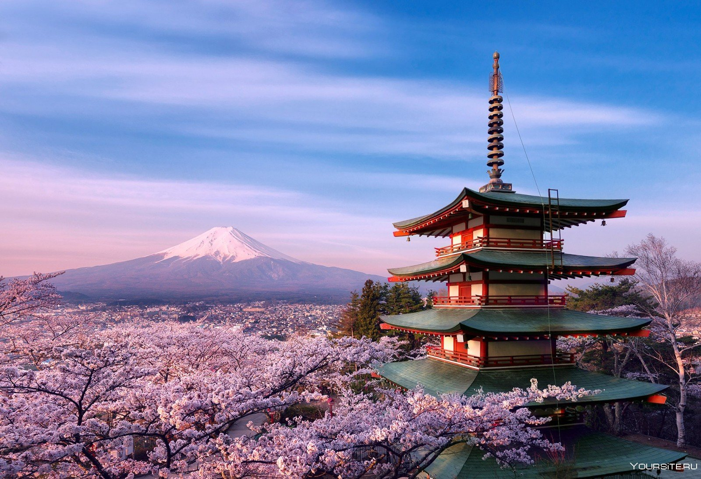
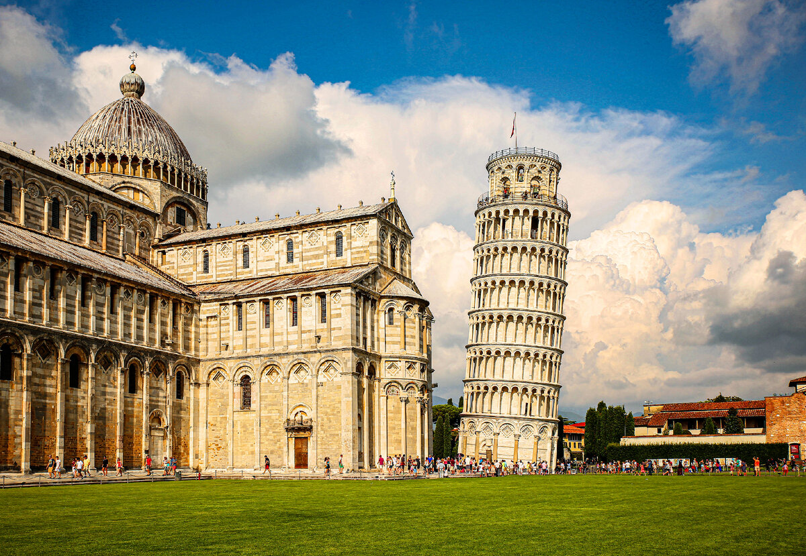

Страны для ваших путешествий и отдыха
| Россия | Испания | Белоруссия | Тайланд | Франция |
|---|---|---|---|---|
| Бразилия | Япония | Великобритания | Италия | Китай |
Россия
Россия столь же богата удивительными по своей красоте местами, сколь и велика размером. Это неудивительно. В самой большой стране мира, в которой поместились 11 из 24 возможных часовых поясов, а также практически все существующие климатические зоны — от Арктики до субтропиков — просто не могло сложиться иначе. Горы и море, тайга и песчаные дюны, цветущие степи и реликтовые леса, ледники и пустыни — всему здесь нашлось место.

Испания
Туризм в Испании – один из самых развитых секторов народной экономики. Ежегодно Испания принимает миллионы туристов со всего света, которых привлекают пляжи и курорты Испании, чудесные отели, аквапарки, казино, дискотеки, прекрасный климат и интересная гастрономия. Огромную роль играет также богатое историческое и культурное наследие страны.
Туризм в Испании очень разнообразен. Любителей пляжного отдыха несомненно привлекут Канарские и Балеарские острова, побережья Коста-Брава, Коста-Дорада, Коста-Бланка и Коста-дель-Соль. Большая часть побережья Испании считается рекреационной зоной международного значения. Пляжи Испании ежегодно получают голубые флаги – высшие международные отметки чистоты и качества.
Туризм в Испании очень разнообразен. Любителей пляжного отдыха несомненно привлекут Канарские и Балеарские острова, побережья Коста-Брава, Коста-Дорада, Коста-Бланка и Коста-дель-Соль. Большая часть побережья Испании считается рекреационной зоной международного значения. Пляжи Испании ежегодно получают голубые флаги – высшие международные отметки чистоты и качества.

Белоруссия
Беларусь — это красивая страна с большим разнообразием как природных, так и интересных исторических достопримечательностей. В какой бы город, агрогородок или даже маленькую деревню вы ни отправились, почти наверняка будете приятно удивлены. Природа страны прекрасна: чистейшие озера и реки, дремучие леса, зеленые поля. Сейчас в Беларуси активно развивается зеленый туризм.

Тайланд
Таиланд, или просто Тай, — это тропическое королевство, целиком и полностью превратившееся в один большой туристический центр. Пляжи, причудливая буддийская архитектура, пышные сады, ночные рынки, экзотические танцы, красочные и довольно пикантные шоу, слоны, коралловые рифы, живописные острова, массажные салоны, кухня в стиле фьюжн — трудно даже придумать, чего же нет в Таиланде. 30–40 миллионов туристов ежегодно приезжает в это юго-восточную страну, чтобы погрузиться в экзотику по разумной цене.

Франция
Достопримечательности Франции хотят увидеть все романтики мира. Это страна Шарля Перро и Виктора Гюго, здесь Наполеон признавался в любви своей Жозефине, а горгульи Нотр-Дам-де-Пари соседствуют с Эйфелевой башней. Франция – это восхитительные лавандовые поля, стройные ряды виноградников и нежное очарование Прованса.
Любовь с первого взгляда – так описывает свои впечатления каждый, кто приезжает в эту страну. Она пропитана историей: свободолюбивые галлы, римские завоеватели и крестоносцы оставили свой след. Архитектура и природа – здесь всё достойно внимания туриста. О самых известных достопримечательностях Франции читайте в нашем материале.
Любовь с первого взгляда – так описывает свои впечатления каждый, кто приезжает в эту страну. Она пропитана историей: свободолюбивые галлы, римские завоеватели и крестоносцы оставили свой след. Архитектура и природа – здесь всё достойно внимания туриста. О самых известных достопримечательностях Франции читайте в нашем материале.

Бразилия
Бразилия – большая и невероятно многогранная страна, объединяющая сразу несколько национальных традиций: европейские, индейские, африканские. По этой причине путешествие в Бразилию понравится тем туристам, которые предпочитают открывать для себя новые культуры и тяготеют к колоритной экзотике Латинской Америки. В Бразилию летят ради знаменитого Карнавала, ретритов в тропических джунглях Амазонии, пляжного отдыха на Копакабане и Ипанеме. В разных частях страны можно увидеть невероятно красивую природу, а современное искусство Бразилии завораживает. Кроме того, в стране есть отличные возможности для активного отдыха, включая серфинг, дайвинг и дельтапланеризм. А еще Бразилия – это всегда праздник, и сюда просто приятно прилететь на пару недель в любое время года.

Япония
Япония — это большая группа островов на восток от России, дальше Владивостока и южнее Сахалина. Это высокотехнологичное государство с самой высокой продолжительностью жизни человека в мире с особенной культурой и традициями. Здесь развито направление экскурсионного туризма.
Главное отличие Японии от других стран – органичный сплав высокотехнологических решений, древней архитектуры и традиций поведения.
Главное отличие Японии от других стран – органичный сплав высокотехнологических решений, древней архитектуры и традиций поведения.

Великобритания
Великобритания – одна из самых красивых стран Европы, где сохранилось огромное количество замков и крепостей. Многие из них открыты для туристов, интересующихся историей страны. Если вы любите мистику, то самое время попытаться разгадать тайну знаменитого Стоунхенджа - каменного сооружения, авторство которого приписывают внеземным цивилизациям.
Фанатам футбола стоит отправиться в Великобританию, чтобы побывать хотя бы на одном матче английской премьер-лиги и вживую увидеть, как играют чемпионы. Если вы сами любите спорт, то Великобритания - именно то место, где можно освоить дайвинг и научиться играть в гольф.
Эту страну дождей и тумана многие считают настоящим раем для поклонников шопинга – в Великобритании можно купить вещи практически любого бренда со скидкой до 90%.
Фанатам футбола стоит отправиться в Великобританию, чтобы побывать хотя бы на одном матче английской премьер-лиги и вживую увидеть, как играют чемпионы. Если вы сами любите спорт, то Великобритания - именно то место, где можно освоить дайвинг и научиться играть в гольф.
Эту страну дождей и тумана многие считают настоящим раем для поклонников шопинга – в Великобритании можно купить вещи практически любого бренда со скидкой до 90%.

Италия
Италию называют музеем под открытым небом — в этой стране, где процветала цивилизация Древнего Рима и творили гении Возрождения, находится больше половины всех культурных памятников Европы. Рим с Колизеем и сокровищами Ватикана, переполненная достопримечательностями Флоренция, Пиза с удивительной падающей башней, каналы Венеции, руины Помпей у подножия Везувия, колоритный Неаполь, романтичная Верона, модный Милан. Но если вдруг покажется мало — Италия добавит пляжи пяти морей, ослепительные вершины Альп, тосканские виноградники и самую правильную пиццу в мире.

Китай
Китай — одно из самых интересных туристических направлений. Страна может предложить путешественникам целый калейдоскоп ярких впечатлений от знакомства с историческим прошлым, культурой и национальными традициями Поднебесной.
В страну приезжают, чтобы побывать на Великой Китайской стене, взглянуть на древние храмы и гробницы, полюбоваться архитектурой старинных восточных дворцов. Тибет привлекает редким шансом прикоснуться к буддистским святыням и возможностью посетить Гималаи. Набирают популярность туры на остров Хайнань, где есть вся необходимая инфраструктура для комфортного пляжного отдыха.
В страну приезжают, чтобы побывать на Великой Китайской стене, взглянуть на древние храмы и гробницы, полюбоваться архитектурой старинных восточных дворцов. Тибет привлекает редким шансом прикоснуться к буддистским святыням и возможностью посетить Гималаи. Набирают популярность туры на остров Хайнань, где есть вся необходимая инфраструктура для комфортного пляжного отдыха.